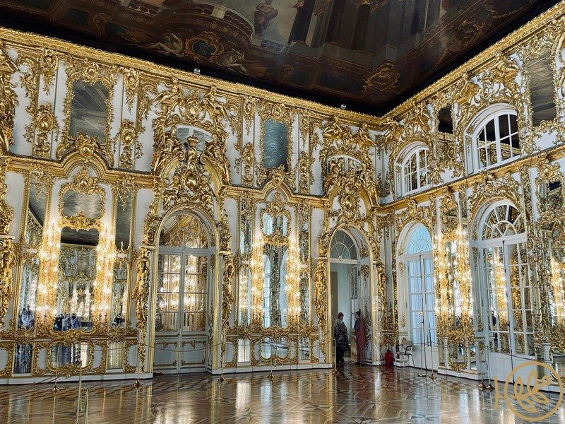

Китайская деревня
30–40 минЯрко-красные пагоды посреди петербургского парка выглядят абсурдно и прекрасно. Рядом Большой китайский мост с вазонами и Крестовый мост-беседка.
Суббота · сбор в 13:00
Приезжаем к обеду, берём пиццу по дороге от вокзала, едим на траве у канала, кормим уток. Дальше — Екатерининский дворец и круг к вечернему свету над Большим прудом.

Как ложится день
Жёстко привязан только сеанс во дворце — внутрь пускают лишь 15 минут после его начала. Всё остальное сдвигается как пойдёт.
Куда едем




Куда идём
Одна петля от вокзала и обратно. Цифры на карте совпадают со списком под ней.
Если захочется большего
Всё в пределах получаса ходьбы друг от друга — решаем прямо на пледе. Фильтр отсеет то, что сегодня не заходит.
Ярко-красные пагоды посреди петербургского парка выглядят абсурдно и прекрасно. Рядом Большой китайский мост с вазонами и Крестовый мост-беседка.

Неоготическая башня, на неё можно подняться — сверху видно оба парка сразу. Билет недорогой, покупается на месте. Лестница длинная.

Два километра по ровной дорожке против часовой: Грот, Чесменская колонна с воды, Турецкая баня, Мраморный мост, Пирамида. Главные виды дня.

Стриженая французская часть сразу за дворцом: Эрмитаж, Верхняя ванна, Камеронова галерея с колоннадой. Ходить почти не надо.
Абсолютно легальный вариант дня. Луг у канала большой, утки приходят сами, а дворец никуда не денется до следующего раза.
Строгий классицизм вместо барочной пышности — последний дом семьи Николая II. Внутрь не идём, но обойти вокруг стоит: народу заметно меньше.
Псевдорусский терем-комплекс с башнями и воротами, куда почти не доходят туристы. Удобно поставить в конец: он по дороге к вокзалу.
Единственный в стране музей Первой мировой войны, в том же Александровском парке. Вариант для тех, кому захочется в помещение, если пойдёт дождь.
Запасная поляна, если у канала окажется людно: пруды ближе к вокзалу, куда туристы почти не заходят.
За прудами Александровского начинаются дорожки, где вообще никого. Заблудиться негде, туристов нет совсем.
По этому фильтру ничего не осталось
Одна на всех
Выбираем до того, как купим билеты: от этого зависит время сеанса.
Максимум травы, минимум шагов. Около 3 км.
Ради Янтарной комнаты. Сеанс на 15:00.
Для тех, кому надо разгуляться. 6–7 км.
Что надо знать
Важно про пикник. В Екатерининском парке на газонах располагаться нельзя — там охрана, и с пледа попросят встать. Все посиделки только в Александровском парке, он для этого и выбран.